3．行列式和二次型
将二次曲线和二次曲面的方程变形，选有主轴方向的轴作为坐标轴以简化方程的形状，这个问题是在18世纪中引进的。当方程是标准型即主轴是坐标轴时，二次曲面用二次项的符号来进行分类，这是柯西在他的《几何中无穷小演算的应用教程》（Leçons sur les a pplications du calcul infinitésimal à lagéométrie，1826）(9)中给出的。然而，那时并不清楚，在化简成标准型时，总得到同样数目的正项和负项。西尔维斯特回答了这个问题，利用了他关于n个变数的二次型的惯性定律(10)．早已知道，
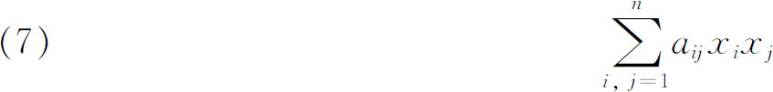
总能用具有非零行列式的实线性变换
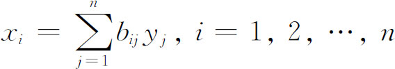
化成r个平方项的和(11)
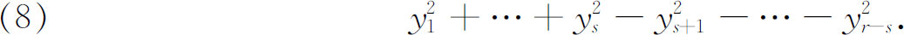
西尔维斯特定律说，正项的个数s以及负项的个数r-s总是不变的，不管用的是什么实变换。西尔维斯特把这定律看成是自明的，没有给出证明。
这定律被雅可比重新发现和证明了(12)。设一个二次型对变数的所有非零的实值都取正值，就称它为正定的；如对上述变数它能取正值或零，就称为半定的；而当取值永远是负的或0时就称为负定的，这些术语是高斯在他的《算术研究》中加以引进的（第271节）。
二次型化简的进一步研究涉及二次型或行列式的特征方程的概念。三个变数的二次型在18世纪和19世纪前半期通常是写成
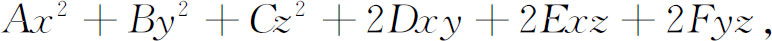
而在近代则写成
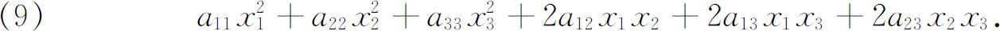
在二次型的后一种记法中曾把它同行列式
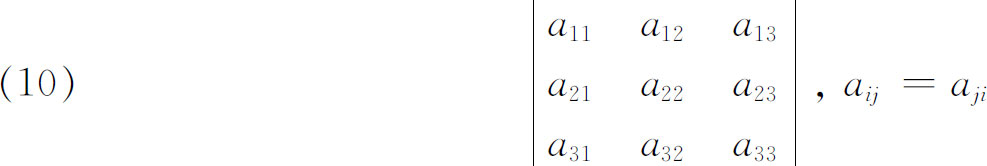
相联系。二次型或行列式的特征方程或本征方程是
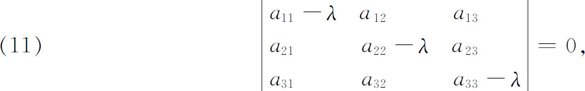
满足这个方程的值λ称为特征根或本征根。由λ的这些值能立刻获得主轴的长度(13)。
特征方程的概念隐含地出现在欧拉的化三个变数的二次型到它们的主轴上去的著作中(14)，虽然他对特征根的实性缺乏证明。特征方程的概念首先明确地出现在拉格朗日关于线性微分方程组的著作中(15)，也出现于拉普拉斯在同一领域的著作中(16)。
拉格朗日在处理他那时代已经知道的六大行星的运动微分方程组时，涉及这些行星相互作用的长期微扰。他的特征方程（也称长期方程）联系于一个六阶行列式，而λ的值确定了微分方程组的解。他会分解这六次方程并且获得了根的情况。拉普拉斯在他的《天体力学》中证明了如果这些行星都沿同一方向运动，则这六个特征根是实数且各不相同。三个变数的二次型的特征值的实性是由阿谢特、蒙日和泊松建立的(17)。
柯西从欧拉、拉格朗日和拉普拉斯的著作中认识了共同的特征值问题。在他1826年的《教程》(18)中着手研究化简三个变数的二次型的问题，并证明了特征方程在直角坐标系的任何变换下是不变的。三年后在他的《数学练习》(19)中，他开始研究行星轨道的长期不等式的问题。在这工作的过程中，他证明了n个变数的两个二次型
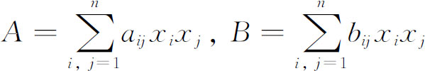
（柯西的B是平方和）能用一个线性变换
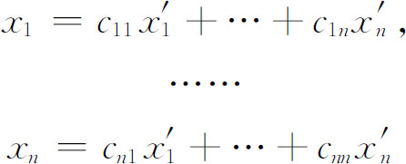
同时化成平方和。他还解决了对任何多个变数的二次型找主轴的问题，在这工作中，他再次用到特征根的概念。
他的工作总括如下：设A和B是任两个给定的二次型，于是能考虑二次型束uA＋vB，这儿u和v是任意参数。束的本征根是比-u/v的一些值，这些值使束的行列式｜uA＋vB｜为零。柯西证明了束的本征根在如下的特殊情况下全为实数，即当其中一个二次型对变数的所有非零实数值是正定的情况。因uA＋vB的行列式是对称的（dij＝dji），而B可以是单位行列式（bij＝0对i≠j，而bii＝1）。柯西证明了任何阶的任何一个实对称行列式都有实特征根。柯西的结果在1834年由雅可比(20)所重复，排除了有相等本征根的情况。特征方程这个术语是属于柯西的(21)。
相似行列式的概念也产生于变换的研究。两个行列式A和B是相似的，如果存在一个非零行列式P使A＝P-1BP。柯西考察了相似变换，在1826年的《教程》(22)中，他证明了它们有相同的特征值。相似变换的重要性在于将投影变换分类（第38章第5节），这是一个长期以来被综合处理的问题。设一个图形F是用线性变换A同图形G相联系，并设另一个这样的变换B变F到F′，变G到G′，则变F′到G′的变换C将和A有同样的性质。变换C＝BAB-1，这是由于B-1变F′到F，A变F到G，而B变G到G′的缘故。
1858年魏尔斯特拉斯(23)对同时化两个二次型成平方和给出了一个一般的方法。他还证明了如果二次型之一是正定的，那么即使某些特征根是相等的，这个化简也是可能的。魏尔斯特拉斯对此问题的兴趣是由围绕平衡位置的小振动的动力学问题引起的，他用他关于二次型的工作证明了稳定性并不因该系统的相等周期的出现而受到破坏，这与拉格朗日和拉普拉斯的假设相反。
西尔维斯特在1851年(24)研究二次曲线和二次曲面的切触和相交时需要考虑这种二次曲线和二次曲面束的分类。特别地，他找寻任何束的标准型，把束写成形式A＋λB，这里
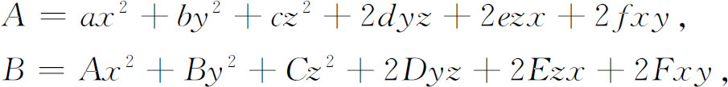
他考察了行列式
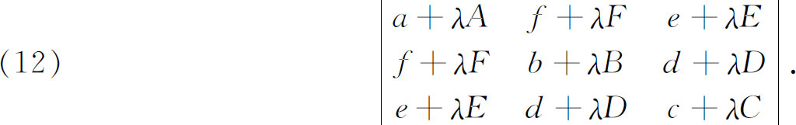
他的分类方法引进了初等因子的概念。A＋λB的行列式的元素是λ的多项式。西尔维斯特证明了如果｜A＋λB｜的任一阶的全部子式有一个公共因子λ＋ε，则当A和B经它们变数的一个线性变换同时变换以后，这个因子将仍是同样子式组的公共因子。他还证明了如果全部i阶子式有因子（λ＋ε）α，则（i＋h）阶子式将包含因子
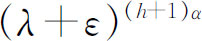
。对每个i，i阶子式的最大公因子Di（λ）中所出现的各线性因子的方幂是｜A＋λB｜的或任何一般行列式A的初等因子。对每个i，Di（λ）被Di-1 （λ）所除的商称为｜A＋λB｜的不变因子。西尔维斯特没有证明不变因子组成两个二次型的不变量的完全集。魏尔斯特拉斯(25)完成了二次型的理论并将其推广到双线性型，双线性型是
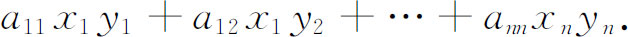
用西尔维斯特初等因子的概念，魏尔斯特拉斯得到束A＋λB的标准型，这里A和B不一定是对称的，但服从于｜A＋λB｜不恒等于零的条件。他还证明了属于西尔维斯特的一个定理的逆。这逆定理说，如A＋λB的行列式同A′＋λB′的行列式的初等因子一致，则能找到一对线性变换同时将A变到A′，将B变到B′。
在行列式的大量的定理中，有一些涉及n个未知数m个线性方程的解。史密斯（Henry J．S．Smith，1826—1883）(26)引进了增广矩阵和非增广矩阵的术语，例如，来讨论方程组
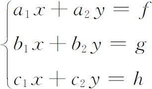
的解的存在性和个数。增广矩阵和非增广矩阵是
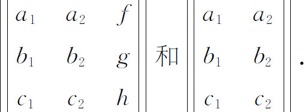
有很多人，包括克罗内克和凯莱在内，做出的一系列结果引导到现在用矩阵来叙述的一般结果，但在19世纪中叶它们是用增广和非增广行列式来叙述的。关于n个未知数m个方程，m可以大于、等于或小于n，方程可以是齐次的（常数项为零），或非齐次的，其一般结果叙述在（例如）道奇森（Charles L．Dodgson）［卡洛尔（Lewis Carroll，1832—1898）］的《行列式的初等理论》（An Elementary Theory of Determinants，1867）中。在上面的课本中可发现现代的条件：为使n个未知数的m个非齐次线性方程的方程组是相容的，必要而充分的是，在非增广和增广矩阵中的最高阶非零行列式是同阶的，用矩阵的语言来说就是两个矩阵的秩相同。
整个19世纪都得到行列式的新结果。作为一个例证，可举阿达马在1893年(27)证明的一个定理，虽然这定理在此以前及以后有很多人知道和证明过。设行列式
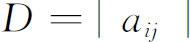
的元素满足条件｜aij｜≤A，则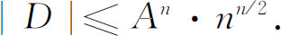
行列式的以上各定理只是已建立的大量定理中很少的样本。在一般行列式的大量其他定理之外，还有成百个有关特殊形式行列式的其他定理，这些特殊形式中有对称行列式
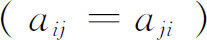
、斜对称行列式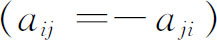
、正交行列式（正交坐标变换的行列式）、加边行列式（由添加一些行和列扩大而成的行列式）、复合行列式（元素本身是行列式），以及其他很多特殊类型的行列式。